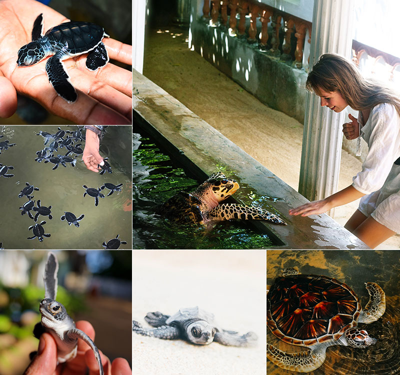

All visitors to Bentota enjoy visiting the Bentota Turtle Hatchery Project.
The picturesque golden sands that entice you to our island also offer numerous endangered turtle species,
such the Olive Ridley and Leatherback turtles, an alluring nesting site. The project's objective is to preserve
and safeguard the eggs against predators and other threats. To find out more about these beautiful and endangered sea creatures,
go to the turtle hatchery in Bentota.
The newborn turtles are released on the beach at dusk,
and you can watch them make their way back to the ocean. Visitors are urged to use caution while young
turtles are released back into the water. Loud sounds, bright lights, and flash photography are prohibited because
they could cause newborn turtles to mistake them for the moon over the water, which would prevent them from finding
their way back home.